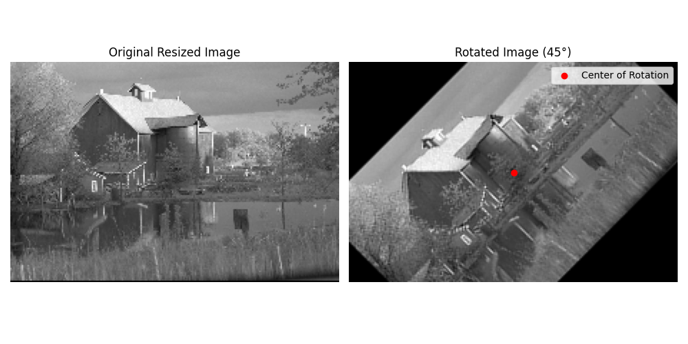

Rotate Image#
We use the rotate module to rotate a 2D image.
Imports#
import numpy as np
import matplotlib.pyplot as plt
from matplotlib import animation
from splineops.affine.affine import rotate
from splineops.resize import resize
from urllib.request import urlopen
from PIL import Image
Load and Rotate the Image#
Load a Kodak image, convert it to grayscale, normalize it, and then resize it by a factor of (0.5, 0.5). After that, scale its intensity back to [0, 255] before rotation.
# Load the 'kodim17.png' image
url = 'https://r0k.us/graphics/kodak/kodak/kodim22.png'
with urlopen(url, timeout=10) as resp:
img = Image.open(resp)
data = np.array(img, dtype=np.float64)
# Convert to grayscale using a standard formula
data_gray = (
data[:, :, 0] * 0.2989 +
data[:, :, 1] * 0.5870 +
data[:, :, 2] * 0.1140
)
# Normalize the grayscale image to [0,1]
data_normalized = data_gray / 255.0
# Define zoom factors for resizing
zoom_factors = (0.3, 0.3)
interp_method = "cubic"
# Resize the image using spline interpolation (this returns image in [0,1])
image_resized = resize(
data_normalized,
zoom_factors=zoom_factors,
method=interp_method
)
# Bring the resized image back to [0,255]
image_resized = (image_resized * 255.0).astype(np.float32)
# Define rotation angle
rotation_angle = 45
# Use the center of the resized image as the custom center of rotation
custom_center = (image_resized.shape[0] // 2, image_resized.shape[1] // 2)
# Rotate the image (now in [0,255])
rotated_image = rotate(
image_resized,
angle=rotation_angle,
center=custom_center
)
# Create a circular mask
radius = min(image_resized.shape) // 2
rows, cols = rotated_image.shape
rr, cc = np.ogrid[:rows, :cols]
# Display the original and rotated images
fig, ax = plt.subplots(1, 2, figsize=(10, 5))
# Display the original image
ax[0].imshow(image_resized, cmap="gray", vmin=0, vmax=255)
ax[0].set_title("Original Resized Image")
ax[0].axis("off")
# Display the rotated image
ax[1].imshow(rotated_image, cmap="gray", vmin=0, vmax=255)
ax[1].scatter(
custom_center[1],
custom_center[0],
color="red",
label="Center of Rotation"
)
ax[1].set_title(f"Rotated Image ({rotation_angle}°)")
ax[1].axis("off")
ax[1].legend()
plt.tight_layout()
plt.show()

Total running time of the script: (0 minutes 1.415 seconds)